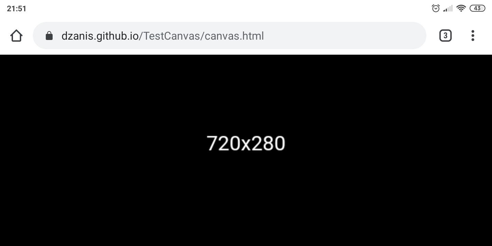

Столкнулся с проблемой на html5 canvas в браузерах смартфона.При повороте из ладшафтного в портретную ориентацию,размер window.innerWidth и window.innerHeight становится больше.
Например в портретной ориентации размеры 360x640,поворачиваю в ландшафтную,размер меняется на 720x280.

После поворота обратно в портретную размер уже больше,т.е 720x1280.

А если вернуть в ландшафтную то она не увеличивается,а такая же 720x280. Почему-то после поворотов в портретной ориентации из 360x640 он решил стать 720x1280.Можно вернуть нормальные 360x640 только после перезагрузки страницы.
Получается что viewport сбрасывается после смены ориентации на реальные пикселы именно на портретной.Но если взять эту страницу и отобразить через iframe,с размерами в портретной ориентации всё нормально.С чем это связанно я пока не нашёл.